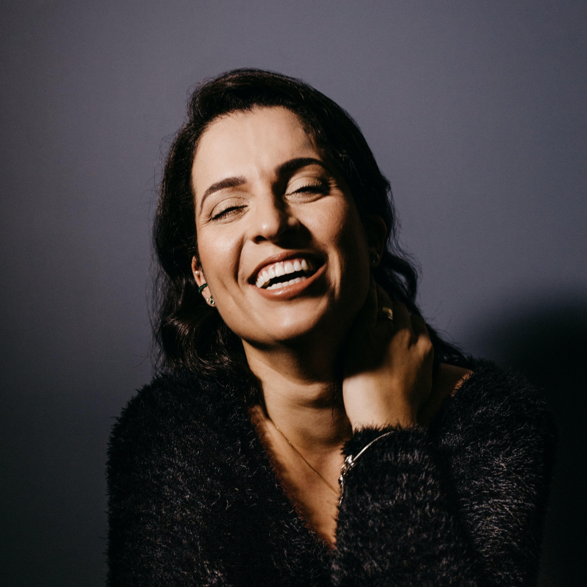
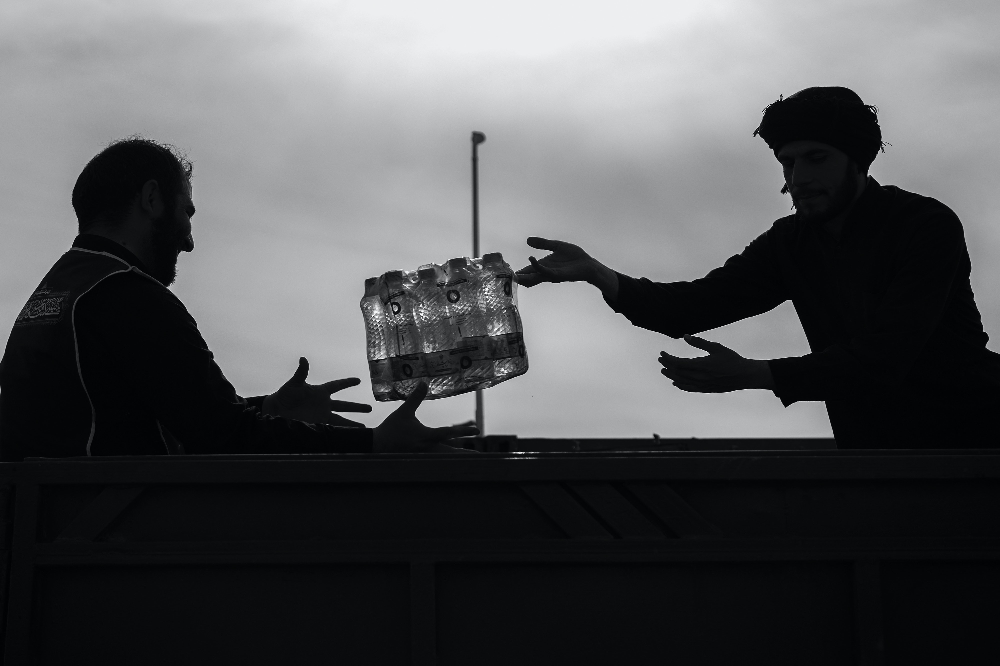

Golden Productions
How it started
Golden Productions is a production studio based in Chattanooga, Tennessee. It was first founded in 2020 during the pandemic. Michelle San, founder, originally started Golden Productions as a hobby. She and her friends would go out and film music videos and projects around the city and post to Instagram. Her Instagram reels began to blow up and soon her account followed. Viewers fell in love with her unique style and began requesting video shoots for their weddings, music videos, and documentaries. Now in 2023, Golden Productions has expanded from a one person team to a five person team.
Our Team
Michelle San
Founder | Director | Videographer
Alex Robinson
Creative Film Director | Wedding Photagrapher
Marvin Smith
Operations Director | Sound Editor
Ian Yu
Lead Videographer | Operations Assistant
Bianca Garcia
Editor | Filmmaker
Still from a documentary shot in the fields of Bali.
 View Services Page